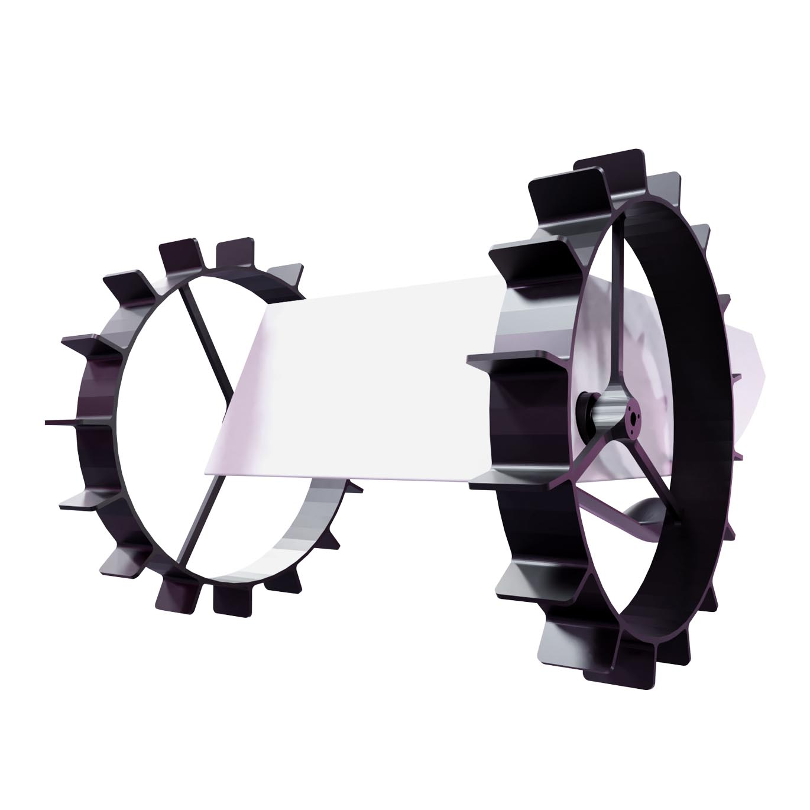
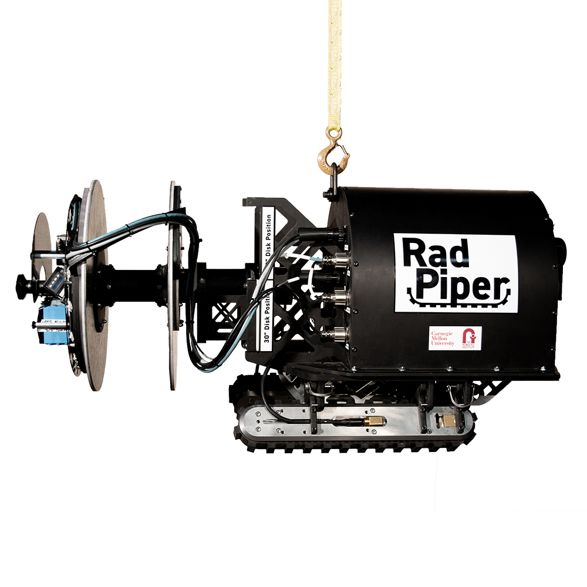
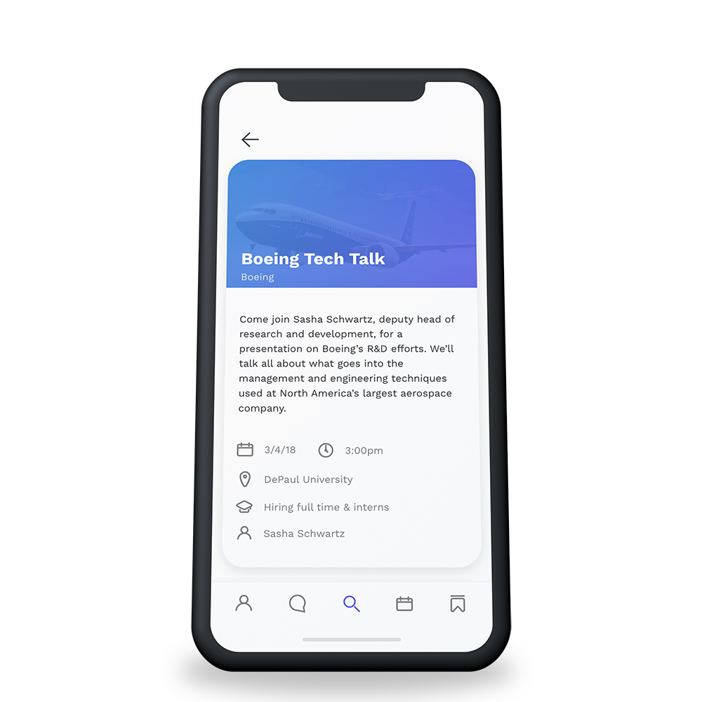
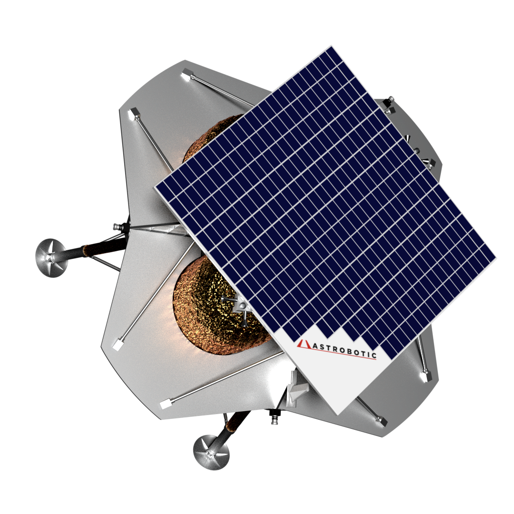

I am a User Experience and Interface Designer specializing in robotics and space ready systems. A founding member of the CubeRover team, I helped launch a robotics startup dedicated to revolutionizing robotic missions to other planets through our standardized and modular rover. Before that I spent two years as Carnegie Mellon Hyperloop’s design lead and worked on robotics projects for the department of energy.
I first arrived at Carnegie Mellon I was planning to study Scenic Design, the design of sets for theatre, film and tv. While I was there however, I fell in love with user experience design and realized I wanted to be a part of the revolution happening in the commercial space industry. Along the way I have developed a wide variety of skills from animation to web development.
Most importantly in my time working for CubeRover, the Hyperloop Team and most of all in the theatre I learned how to work as a part of a team. I have put these lessons to good use leading teams of students and friends on a variety of projects and look forward to bringing my experience to your team.